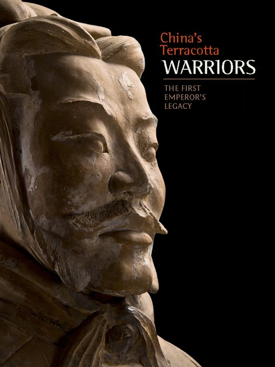

Touristic Perspective
Cultural Experience
A visit to the Terracotta Warriors is not only a chance to learn about China's history, but also to gain insight into Chinese culture. Visitors can watch traditional Chinese performances, taste delicious Chinese dishes, and learn about Chinese arts and crafts.
Educational value
The Terracotta Army is not only attractive to tourists, but also has important educational value for students and educational groups. It offers a unique learning opportunity that can help people gain a deeper understanding of Chinese history and culture.